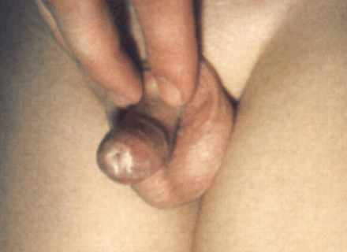

Balanitis Xerotica Obliterans: Conservative Treatment Options.
Introduction. Balanitis Xerotica Obliterans was first described by Stühmer in 1928 in Germany.1 Balanitis Xerotica Obliterans (BXO) and Lichen Sclerosus et Atrophicus (LSA) are two names for the same disease.2-3,21,32 BXO/LSA is a skin disease of unknown etiology.2 It occurs in both males and females. LSA is the name applied when the disease appears in a female or a male in other than the genital organs. BXO is the name traditionally used when the disease afflicts the male sexual organs. An older name is kraurosis glandii et praeputii penis.2,6 This page is limited to information about the disease in males when it affects the genital organs. For information on the disease in females see Lichen Sclerosus.
BXO is a rare disease that affects only 6 of 1000 males (.6 of 1 percent).21 It can affect males of any age.21 The traditional treatment has been radical circumcision.16 However, many conservative treatment options are now available.
 Diagnosis. Freeman and Laymon (1941) provide a detailed classic description of the disease:2 BXO is usually distinguished by a ring of hardened tissue with a whitish color at the tip of the foreskin. The hardening of the tissue prevents retraction of the foreskin.23 Immunophenotyping may be useful in differential diagnosis.15 Histologic examination of cutaneous biopsy gives a definite diagnosis.7,8,23,27 If the biopsy rules out BXO as a cause of non-retractile foreskin, then conservative treatment is most likely possible. On the other hand, if the biopsy confirms the presence of BXO, the choice of treatment modality is more difficult.
BXO is a relatively serious disease. It can cause urethral stricture and retention of urine.2 Malignant tumors have (rarely) been reported to develop from BXO.2,23 Meffert et al. provide a recent review of the literature.17 A person with BXO or suspected BXO should be under the care of a medical doctor.
Conventional vs. Conservative treatment. Conventional medical wisdom has stated that BXO is an absolute indication for circumcision.16 However, that treatment modality dates from a time when the prepuce was considered to have no value for the individual. Clearly this is no longer the case. The function and value of the prepuce is now recognized, and protection of the individual from unnecessarily radical surgery is always a doctor's prerogative. Fortunately, researchers have reported some success with conservative therapies for BXO that preserve the prepuce.
Medical treatment. Corticosteroids have been used with varying degrees of success.4,5. Pasieczny reports successful treatment with topical testosterone propionate ointment.7,26 Several authorities report success with clobetasol propionate.14,19,22,24 Shelley and colleagues report successful treatment with antibiotics.25 Depasquale and colleagues, however, recommend radical circumcision, but also suggest mometasone or clobetasol cream as a medical treatment.27 Dewan reports that BXO is successfully treated with topical steroid ointment during the early stages.30 31 Assmann et al. report that tacrolimus ointment is effective for treatment of LSA in women.32 Clinical experience has shown it to be effective against BXO in boys. Ebert et al. report safety and good results with the use with Tacrolimus ointment.38
Surgical treatment. Carbon dioxide (CO2) laser surgery has been used with reported good results.9,10,11,13,20 A carbon dioxide laser is used to vaporize the lesions. Circumcision is the conventional radical surgical treatment but sacrifices the prepuce.8,23,24,26,27
Conclusion. There still seems to a wide range of opinion on the best treatment modalities for BXO. The cause is still unknown, although Shelley et al. hypothesize spirochete infection.24 More research is needed. Now, however, there is a good possibility of successful treatment without radical circumcision.29
The trend today seems to be for greater use of medical treatment and less use of radical surgery in the treatment of n BXO.
Library holdings are indexed in approximate chronological order of publication.
Library holdings
- Stühmer A. Balanitis xerotica obiterans und ihre Beziehungen zur 'Kraurosis glandi et praeputii penis'. Arch Dermatol Syph (Berlin) 1928;156:613. DOI: 10.1007/BF01828558 [Abstract]
- Freeman C, Laymon CW. Balanitis xerotica obliterans. Arch Dermat Syph (Chicago) 1941;44;(4):547-559.
- Laymon CW, Freeman C. Relationship of Balanitis xerotica obliterans to lichen sclerosus et atrophicus. Arch Derm Syph (Chicago) 1944: 49; 57-59.
- Catterall RD, Oakes JK. Treatment of balanitis xerotica obiterans with hydrocortisone injections. Br J Ven Dis 1962;38:75.
- Poynter JH. Levy J. Balanitis xerotica obliterans: effective treatment with topical and sublesional corticosteroids. Br J Urol 1967;39(4):420-5.
- McKay DL Jr, Fuqua F, Weinberg AG. Balanitis xerotica obliterans in children. J Urol 1975;114(5):773-5.
- Pasieczny TAH. The treatment of balanitis xerotica obliterans with testosterone propionate ointment. Acta Derm Venerol (Stockholm) 1977;57:275-277.
- Rickwood AMK, Hemalatha V, Batcup G, Spitz L. Phimosis in Boys. Brit J Urol 1980; 52:147-150.
- Rosemberg SK, Jacobs H. Continuous wave carbon dioxide treatment of balanitis xerotica obliterans. Urology 1982;19(5):539-41.
- Ratz JL. Carbon dioxide laser treatment of balanitis xerotica obliterans. J Am Acad Dermatol 1984;10:925-28.
- Rosemberg SK. Carbon dioxide laser treatment of external genital lesions. Urology 1985;25(6):555-8.
- Bale PM, Lochhead A, Martin HC, Gollow I. Balanitis xerotica obliterans in children. Pediatr Pathol 1987;7(5-6):617-27.
- Windahl T, Hellsten S. Carbon dioxide laser treatment of lichen sclerosus et atrophicus. J Urol 1993;150:868-70.
- Jørgensen ET, Svensson Å. The treatment of phimosis in boys, with a potent topical steroid (clobetasol propionate 0,05%) cream. Acta Dermato-Venereologica (Stockholm) 1993;73(1):55-56.
- Hinchliffe SA, Ciftci AO, Khine MM, et al. Composition of the inflammatory infiltrate in pediatric penile lichen sclerosus et atrophicus (balanitis xerotica obliterans): a prospective, comparative immunophenotyping study. Pediatr Pathol 1994;14(2):223-33.
- Meuli M, Briner J, Hanimann B, Sacher P. Lichen sclerosus et atrophicus causing phimosis in boys: a prospective study with 5-year followup after complete circumcision. J Urol 1994:152(3):987-9.
- Meffert JJ, Davis BM, Grimwood RE. Lichen Sclerosus. J Am Acad Dermatol 1995;32(3):393-416.
- Hrebinko RL. Circumferential laser vaporization for severe meatal stenosis secondary to balanitis xerotica obliterans. J Urol 1996;156(5):1735-6.
- Jorgensen ET, Svensson A. Problems with the penis and prepuce in children: Lichen sclerosus should be treated with corticosteroids to reduce need for surgery. BMJ 1996;313:692. (link to www.bmj.com)
- Kartamaa M, Reitamo S. Treatment of lichen sclerosus with carbon dioxide laser vaporization. Br J Dermatol 1997;136:356-9.
- Parsad D, R. Saini R. Oral Stanozolol in Lichen Sclerosus et Atrophicus. J Am Acad Dermatol 1998; 38( 2) part 1: 278-9. (link to www.vulvarpain.icom.ca)
- Dahlman-Ghozlan K, Hedblad MA, von Krogh G. Penile lichen sclerosus et atrophicus treated with clobetasol dipropionate 0.05% cream: a retrospective clinical and histopathological study. J Am Acad Dermatol 1999;40(3):451-7.
- Shankar KR, Rickwood AM. The incidence of phimosis in boys.BJU Int 1999;84(1):101-2.
- Neuhaus IM, Skidmore RA. Balanitis xerotica obliterans and its differential diagnosis. J Am Board Fam Pract 1999; 12(6):473-476.
- Shelley, WB, Shelley ED, Gruenwald MA, et al. Long-term antibiotic therapy for balanitis xerotica obliterans. J Am Acad Dermatol 1999;40:69-72.
- Rickwood AMK. Medical indications for circumcision. BJU Int 1999: 83 Suppl 1, 45-51.
- Depasquale I, Park AJ, Bracka A. The treatment of balanitis xerotica obliterans. BJU Int 2000;86(4):459-465.
- Rickwood AMK, Kenny SE, Donnell SC. Towards evidence based circumcision of English boys: survey of trends in practice. BMJ 2000;321:792-793.
- Dalton JD. BXO does not require treatment by circumcision. (letter) BMJ 2000; rapid response pages.
- Kiss A, Csontai A, Pirot L, et al. The response of balanitis xerotica obliterans to local steroid application compared with placebo in children. J Urol 2001;165(1):219-20.
- Neill SM, Tatnall FM, Cox NH. Guidelines for the management of lichen sclerosus. Br J Dermatol 2002;147:640-9.
- Finkbeiner AE. Balanitis xerotica obliterans: a form of lichen sclerosus. South Med J 2003;96(1):7-8.
- Kizer WS, Prairie T, Morey AF. Balanitis xerotica obliterans: epidemiologic distribution in an equal access health care system. South Med J 2003;96(1):9-11.
- Dewan PA. Treating Phimosis. Med J Aust 2003;178 (4):148-150.
- Assmann T, Becker-Wegerich P, Grewe M, et al. Tacrolimus ointment for the treatment of vulvar lichen sclerosis. J Am Acad Dermatol 2003;48(6):935-7.
- Gargollo PC, Kozakewich HP, Bauer SB, et al. Balanitis xerotica obliterans in boys. J Urol 2005;174:1409-12.
- Vincent MV, MacKinnon E. The response of clinical balanitis xerotica obliterans to the application of topical steroid-based creams. J Pediatr Surg 2005;40(4):709–12.
- Ebert AK, Vogt T, Rösch WH. [Topical therapy of balanitis xerotica obliterans in childhood: Long-term clinical results and an overview.] Urologe A. 2007;46(12):1682-6.
- Pugliese JM, Morey AF, Peterson AC. Lichen sclerosus: review of the literature and current recommendations for management. J Urol 2007;178:2268-76. doi:10.1016/j.juro.2007.08.024
- Poindexter G, Morrell DS. Anogenital pruritus: lichen sclerosus in children. Pediatr Ann 2007;36(12):785-91.
Medical Photographs
Family Practice offers a photograph of BXO. (link to www.familypractice.com)